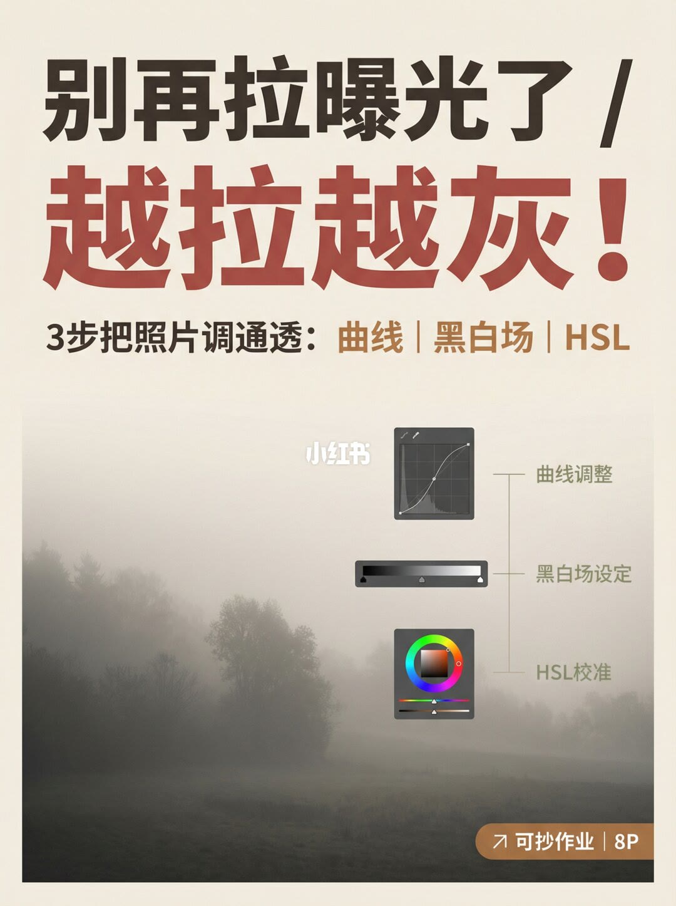
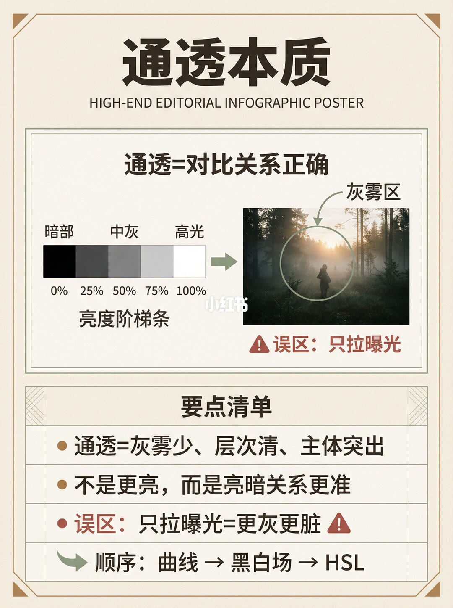
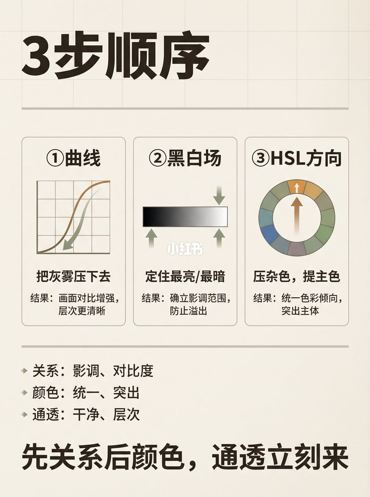
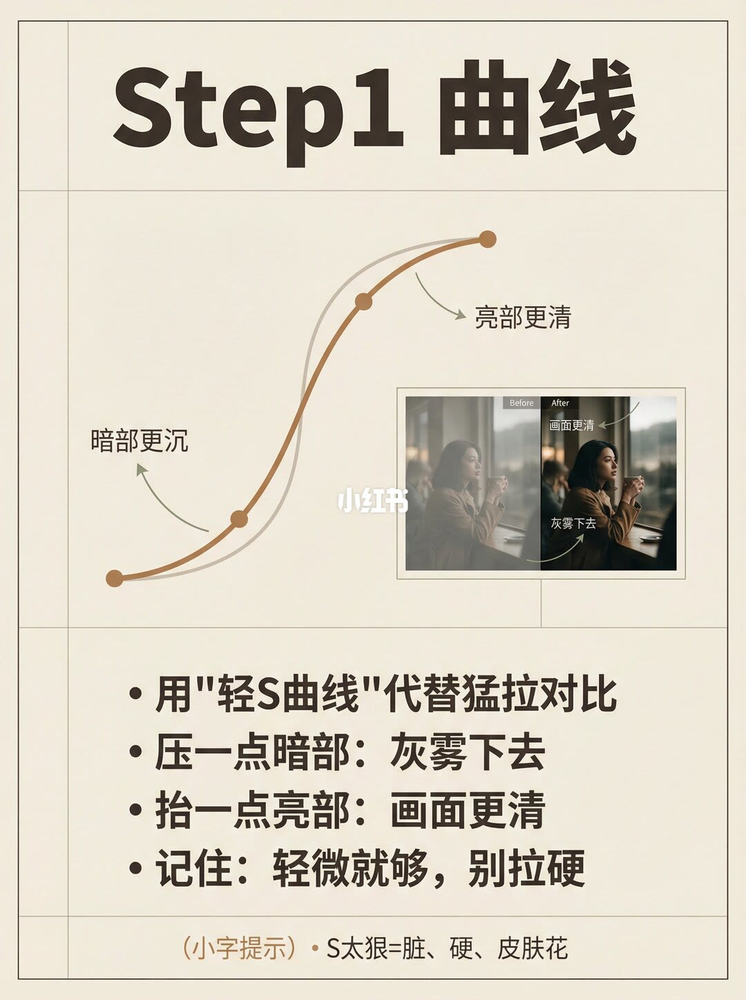
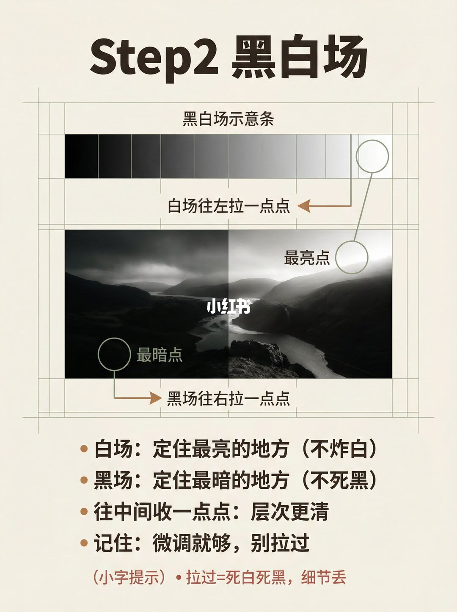
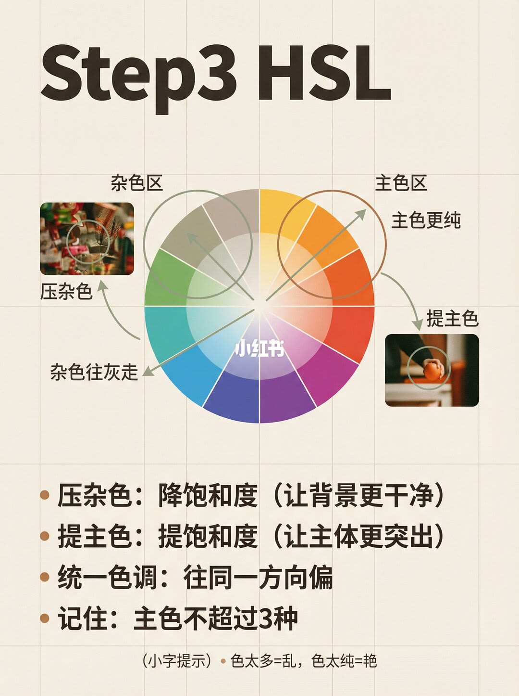
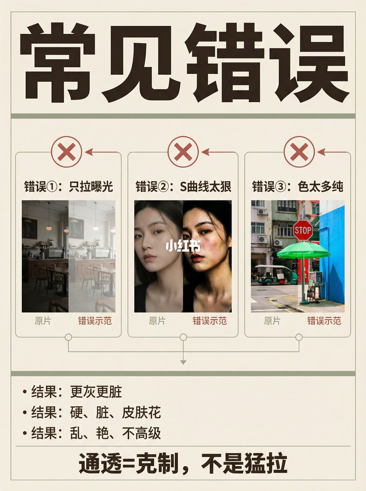
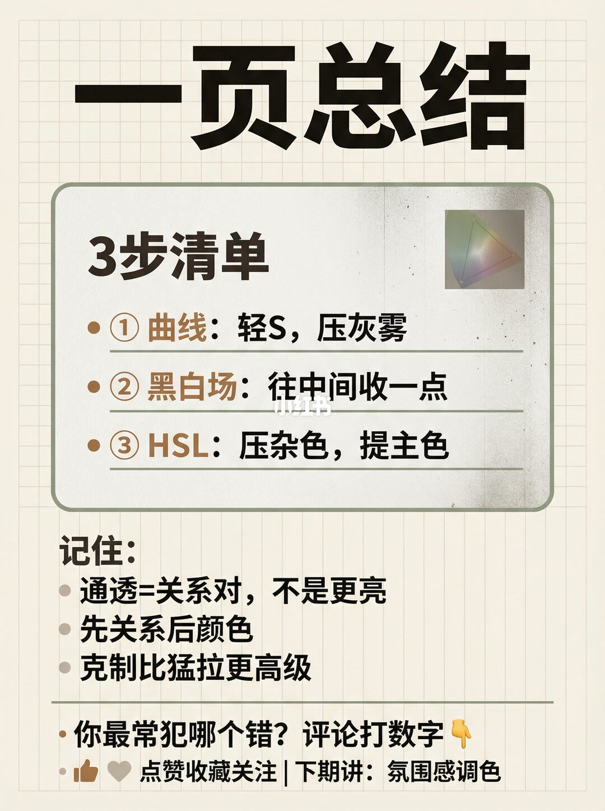

1/8
封面：越拉曝光越灰

大标题是「别再拉曝光了」，下一行红字是「越拉越灰！」。笔记标题多一个「只」字，写成「别再只拉曝光了！越拉越灰」。副题是「3步把照片调通透：曲线 | 黑白场 | HSL」，三个关键词用偏红棕色标出。
中间竖排三个示意：曲线调整（S 形曲线）、黑白场设定（黑到白的渐变条）、HSL 校准（色轮）。底图是一片雾气很重、对比很低的田野和树线，用来展示发灰的起点。右下角橙色角标写「可抄作业 | 8P」。画面中央有浅色小红书水印。
2/8
通透是对比关系，不是更亮

页题是「通透本质」。中间公式写成「通透 = 对比关系正确」。左侧是一条亮度阶梯，标了暗部、中灰、高光。阶梯上是否印了具体百分比，无法确认，这里不记成数字。右侧是一张逆光雾林里的人影，绿圈标「灰雾区」，红标写「误区：只拉曝光」。
底部要点有四条。定义：通透 = 灰雾少、层次清、主体突出。澄清：不是更亮，而是亮暗关系更准。警告：只拉曝光 = 更灰更脏。顺序：曲线 → 黑白场 → HSL。这一页先把「别拉曝光」说成判断，还没给操作幅度。
3/8
三步顺序：先关系，后颜色

页题是「3步顺序」，三栏并排。
① 曲线：图示是一条 S 曲线，箭头指向把中段压下去。动作写「把灰雾压下去」。结果写「画面对比增强，层次更清晰」。
② 黑白场：黑到白的渐变条，两端箭头往中间收。动作写「定住最亮/最暗」。结果写「确立影调范围，防止溢出」。
③ HSL 方向：色轮箭头指向暖色一段。动作写「压杂色，提主色」。结果写「统一色彩倾向，突出主体」。
分隔线下面把三件事收成：关系是影调、对比度；颜色是统一、突出；通透是干净、层次。页底一句是「先关系后颜色，通透立刻来」。颜色被明确排在曲线和黑白场之后。
4/8
第一步：轻 S 曲线，别拉硬

页题是「Step1 曲线」。图上一条浅灰直线是原状态，一条棕色浅 S 叠在上面，能看见两个控制点。下段箭头写「暗部更沉」，上段箭头写「亮部更清」。右侧是窗边坐着的人，一边雾、一边清，清的一侧标「画面更清」「灰雾下去」。前后对照没有标滑块读数。
正文四句：用「轻 S 曲线」代替猛拉对比；压一点暗部，灰雾下去；抬一点亮部，画面更清；记住轻微就够，别拉硬。小字提示：S 太狠 = 脏、硬、皮肤花。「一点」「轻微」都没有换成数值。
5/8
第二步：黑白场只往中间收一点

页题是「Step2 黑白场」。上面一条黑白场示意条，白的一端被圈出，字是「白场往左拉一点点」。下面是一张黑白风景：河、暗山、云。云上的最亮点连到白场；山影上的最暗点旁写「黑场往右拉一点点」。拉了多少，图上没有数字。
正文：白场定住最亮的地方，不炸白；黑场定住最暗的地方，不死黑；往中间收一点点，层次更清；微调就够，别拉过。小字：拉过 = 死白死黑，细节丢。和第 4 页一样，边界是「过了就丢细节」，不是一组参数。
6/8
第三步：压杂色，主色收拢

页题是「Step3 HSL」。色轮左边标「杂色区」，箭头写「杂色往灰走」；右边标「主色区」，箭头写「主色更纯」。左侧小图是杂乱背景，圈出后标「压杂色」；右侧小图是手里一只橙色果实，圈出后标「提主色」。色轮中央有小红书水印。
四条正文：压杂色，降饱和度，让背景更干净；提主色，提饱和度，让主体更突出；统一色调，往同一方向偏；记住主色不超过 3 种。小字：色太多 = 乱，色太纯 = 艳。笔记正文另写「先压杂色（黄/绿最容易脏），再统一主色明度」。图上这页写的是饱和度方向和主色种数，没有黄、绿通道的滑块读数，明度和饱和度两套说法都保留，不互相改写成数字。
7/8
三种常见错误都是拉过了

页题是「常见错误」，三栏都带红叉。
错误①只拉曝光。咖啡馆内景，左边原片偏暗，右边错误示范被整体抬亮，发灰发平。结果：更灰更脏。
错误② S 曲线太狠。人像原片较柔，错误示范暗部死、亮部冲，皮肤发花。中间有小红书水印。结果：硬、脏、皮肤花。这和第四页小字是同一句后果。
错误③色太多纯。街景里绿伞和红色标志，错误示范绿和蓝被拉得很艳。结果：乱、艳、不高级。
页底收成「通透 = 克制，不是猛拉」。三组对照都是方向演示，没有标出错误示范用了哪一档数值。
8/8
一页清单：关系对，再谈颜色

页题是「一页总结」。清单框里三条：① 曲线，轻 S，压灰雾；② 黑白场，往中间收一点；③ HSL，压杂色，提主色。框角有一小块色域示意。
「记住」三条：通透 = 关系对，不是更亮；先关系后颜色；克制比猛拉更高级。底下问「你最常犯哪个错？评论打数字」，并预告下期讲氛围感调色。笔记正文说会给「可抄范围清单」，这一页的清单仍是方向，没有曝光、对比或 HSL 的具体数值。
汇总
通透是把灰雾和颜色分开处理
结论：发灰时不要先拉曝光。通透在这套图里等于亮暗关系更准，顺序固定为轻 S 曲线、黑白场往中间收一点、再压杂色提主色。只拉曝光会把灰雾一起抬亮（第 2、7 页）；曲线和黑白场负责层次（第 3–5、8 页）；HSL 负责把背景变干净、主体收拢，并且主色不超过三种（第 6、8 页）。
支撑页：第 1 页提出「越拉越灰」和三步名称；第 2 页给出定义和误区；第 3 页规定先关系后颜色；第 4–6 页分别写曲线、黑白场、HSL 的方向和过界后果；第 7 页用三组原片对照把三种拉法的脏法摊开；第 8 页把三步收成可记的清单。
边界：全套没有可执行的滑块数字，「一点点」「轻微」「往中间收一点」不能换成参数。笔记正文写黄、绿最容易脏、再统一主色明度，第 6 页图面写的是降饱和、提饱和和主色不超过 3 种，两处没有给出通道数值。示例是雾景、咖啡馆、人像和街景，不能当成所有题材的配方。第 7 页「不高级」、第 8 页「克制比猛拉更高级」是审美判断。下期氛围感调色不在这 8 页里。